Translational & Rotational Mechanical System Transfer Functions
Control 2.3
Imron Rosyadi
Translational & Rotational Mechanical System Transfer Functions
Chapter 2.5–2.6
Learning Objectives
By the end of this session, you should be able to:
- Write equations of motion for translational and rotational mechanical systems using Newton’s laws.
- Derive transfer functions \(G(s)\) relating displacement (or angle) to applied force (or torque).
- Use the concept of mechanical impedance to write equations directly in the \(s\)‑domain without first writing time‑domain differential equations.
- Recognize and exploit the electrical–mechanical analogies (R, L, C ↔︎ damper, mass, spring).
- Write equations of motion for multi‑degree‑of‑freedom systems by inspection, using “mesh‑like” patterns.
Big Picture: Why We Care
Control systems in ECE often involve mechanics:
- Hard disk drive head positioning (rotational + translational).
- 3D printer or CNC axis control.
- Automotive suspensions (sprung mass).
- Robotics joints with flexible couplings.
To design controllers, we need transfer functions that describe how motion responds to forces/torques.
Tip
We will show that mechanical systems can be modeled just like electrical RLC circuits, enabling us to reuse circuit techniques.
Review: Transfer Functions
For any linear time-invariant (LTI) system with zero initial conditions:
\[ G(s) = \frac{Y(s)}{U(s)} \]
where
- \(U(s)\) = Laplace transform of input
- \(Y(s)\) = Laplace transform of output
In circuits, examples:
- \(G(s) = \dfrac{V_{\text{out}}(s)}{V_{\text{in}}(s)}\)
- \(G(s) = \dfrac{I_{\text{out}}(s)}{V_{\text{in}}(s)}\)
In mechanical systems, we will see examples like:
- \(G(s) = \dfrac{X(s)}{F(s)}\) (displacement per force)
- \(G(s) = \dfrac{\theta(s)}{T(s)}\) (angle per torque)
Translational Mechanical Elements
Three basic translational elements
- Spring (stiffness \(K\))
- Viscous damper (damping coefficient \(f_v\))
- Mass (\(M\))
Variables:
- Force: \(f(t)\) [N]
- Displacement: \(x(t)\) [m]
- Velocity: \(v(t) = \dfrac{dx}{dt}\) [m/s]


![images/chapter_2/Pasted%20image%2020260221134345.png){height=170}
Translational Element Equations (Time Domain)
Table 2.4 (time-domain relations)
| Component | Force–velocity | Force–displacement |
|---|---|---|
| Spring | \(f(t) = K \displaystyle\int_{0}^{t} v(\tau)\, d\tau\) | \(f(t) = K x(t)\) |
| Viscous damper | \(f(t) = f_v v(t)\) | \(f(t) = f_v \dfrac{dx(t)}{dt}\) |
| Mass | \(f(t) = M \dfrac{dv(t)}{dt}\) | \(f(t) = M \dfrac{d^2 x(t)}{dt^2}\) |
Units recap:
- \(f(t)\) – N (newtons)
- \(x(t)\) – m (meters)
- \(v(t)\) – m/s
- \(K\) – N/m
- \(f_v\) – N·s/m
- \(M\) – kg (= N·s²/m)
Electrical–Mechanical Analogies (Mesh-Style)
From comparing mechanical and electrical tables:
- Mechanical force \(f\) ↔︎ Electrical voltage \(v\)
- Mechanical velocity \(v\) ↔︎ Electrical current \(i\)
- Mechanical displacement \(x\) ↔︎ Electrical charge \(q\)
Element analogies (this “mesh-style” view):
- Spring ↔︎ Capacitor
- Viscous damper ↔︎ Resistor
- Mass ↔︎ Inductor
Implication:
- Summing forces (in terms of velocity) ↔︎ Summing voltages (in terms of current)
- Equations look like mesh equations in circuits.

Note
There is also a force–current analogy (node-style), but in this section we mainly use the force–voltage analogy.
1‑DOF Translational System: Physical Setup
Consider the system in Figure 2.15(a):
- A mass \(M\) attached to a fixed wall by a spring (\(K\)) and a damper (\(f_v\)) in parallel.
- An external force \(f(t)\) is applied to the mass.
- We measure the mass displacement \(x(t)\).
Goal: Find transfer function \(G(s) = \dfrac{X(s)}{F(s)}\).
Steps:
- Draw a free-body diagram (FBD).
- Apply Newton’s 2nd law (sum of forces = mass × acceleration).
- Write the equation of motion.
- Laplace transform and solve for \(G(s)\).
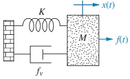
1‑DOF Translational: Free-Body Diagram
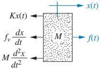
For motion assumed to the right:
- Applied force \(f(t)\) acts to the right.
- Spring force \(Kx(t)\) acts left (restoring).
- Damper force \(f_v \dfrac{dx}{dt}\) acts left (opposes motion).
- Inertial force \(M \dfrac{d^2x}{dt^2}\) (mass × acceleration) effectively appears on left side of the equation.
Equation from Newton’s law (sum of forces = \(M\ddot{x}\)):
\[ M\frac{d^{2}x(t)}{dt^{2}}+f_{v}\frac{dx(t)}{dt}+Kx(t)=f(t) \]
1‑DOF Translational: Transfer Function
Take Laplace transform with zero initial conditions:
\[ M s^{2}X(s)+f_{v}s X(s)+K X(s)=F(s) \]
Factor \(X(s)\):
\[ (M s^{2}+f_{v}s+K)X(s)=F(s) \]
Transfer function:
\[ G(s) = \frac{X(s)}{F(s)}=\frac{1}{Ms^{2}+f_{v}s+K} \]
Block diagram (Figure 2.15(b)):
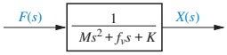
Mechanical Impedance: Shortcut in the \(s\)‑Domain
From Table 2.4, taking Laplace transforms:
Spring: \[ F(s)=K X(s) \Rightarrow Z_M(s) = \frac{F(s)}{X(s)} = K \]
Damper: \[ F(s)=f_{v}s X(s) \Rightarrow Z_M(s) = f_v s \]
Mass: \[ F(s)=M s^{2}X(s) \Rightarrow Z_M(s) = Ms^2 \]
Define mechanical impedance:
\[ Z_{M}(s)=\frac{F(s)}{X(s)} \]
Important
Once each element has \(Z_M(s)\), we can skip writing the differential equation, just like in AC circuit analysis with impedances.
1‑DOF Translational: Impedance Picture
From the FBD, in the \(s\)‑domain each force is of the form
\[ F(s) = Z_M(s) X(s) \]
So in Figure 2.16(b):
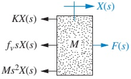
We get directly:
\[ [Ms^{2}+f_{v}s+K]X(s) = F(s) \]
This is of the form
\[ [\text{Sum of impedances}] \cdot X(s) = [\text{Sum of applied forces}] \]
similar (but not strictly analogous) to a mesh equation.
Degrees of Freedom (DOF)
Definition:
- A system’s number of degrees of freedom (DOF) = number of independent motions.
- A point of motion is independent if it can move while all other points are held still.
Consequences:
- Number of DOF = number of independent equations of motion needed.
- Motions are usually coupled (springs, dampers) but still count as separate DOF.
Analogy with circuits:
- In a 2‑loop circuit, two mesh currents: 2 equations.
- In a 2‑mass mechanical system, two independent displacements: 2 equations.
Tip
To solve:
- Draw a free-body diagram for each DOF.
- Write force balance (Newton’s law) for each.
- Laplace transform the set of equations and solve for the desired transfer function.
Example 2.17: Two-DOF Translational System
Problem:
Find transfer function \(G(s) = \dfrac{X_2(s)}{F(s)}\) for the system in Figure 2.17(a).
- Two masses \(M_1, M_2\)
- Springs \(K_1, K_2, K_3\)
- Dampers \(f_{v1}, f_{v2}, f_{v3}\)
DOF:
- \(x_1(t)\): motion of \(M_1\)
- \(x_2(t)\): motion of \(M_2\)
\(\Rightarrow\) 2 equations of motion needed.
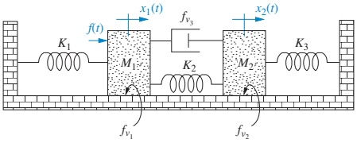
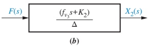
Example 2.17: Superposition for FBDs
To get forces on \(M_1\):
- Move \(M_1\) to the right, hold \(M_2\) still → forces due to \(M_1\)’s own motion.
- Hold \(M_1\) still, move \(M_2\) to the right → forces on \(M_1\) due to \(M_2\)’s motion.
- Add the two sets of forces (superposition) → total forces on \(M_1\).
Figures 2.18(a–c) illustrate this:
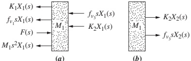
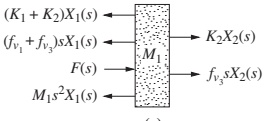
Similarly for \(M_2\) using Figures 2.19(a–c).
Example 2.17: Equations of Motion (Laplace Form)
From the FBDs (Figures 2.18(c), 2.19(c)), we obtain in the Laplace domain:
\[ \big[M_{1}s^{2} + (f_{v_{1}}+f_{v_{3}})s + (K_{1}+K_{2})\big]X_{1}(s) - (f_{v_{3}}s+K_{2})X_{2}(s) = F(s) \]
\[ -(f_{v_{3}}s+K_{2})X_{1}(s) + \big[M_{2}s^{2} + (f_{v_{2}}+f_{v_{3}})s + (K_{2}+K_{3})\big]X_{2}(s) = 0 \]
We can write these in matrix form:
\[ \begin{bmatrix} Z_{11} & Z_{12} \\ Z_{21} & Z_{22} \end{bmatrix} \begin{bmatrix} X_1(s) \\ X_2(s) \end{bmatrix} = \begin{bmatrix} F(s) \\ 0 \end{bmatrix} \]
where
- \(Z_{11}\) = sum of impedances connected to \(x_1\)
- \(Z_{22}\) = sum of impedances connected to \(x_2\)
- \(Z_{12} = Z_{21} = -(f_{v_3}s + K_2)\) = negative sum of impedances between \(x_1\) and \(x_2\)
Example 2.17: Transfer Function
Solve the 2×2 system for \(X_2(s)/F(s)\):
\[ \frac{X_{2}(s)}{F(s)} = G(s) = \frac{(f_{v_{3}}s+K_{2})}{\Delta} \]
where
\[ \Delta=\left|\begin{array}{cc} M_{1}s^{2} + (f_{v_{1}}+f_{v_{3}})s + (K_{1}+K_{2}) & -(f_{v_{3}}s+K_{2})\\ -(f_{v_{3}}s+K_{2}) & M_{2}s^{2} + (f_{v_{2}}+f_{v_{3}})s + (K_{2}+K_{3}) \end{array}\right| \]
This is the determinant of the impedance matrix.
Note
Again, form is identical to a 2‑loop RLC circuit if we replace masses, springs, dampers with inductors, capacitors, resistors via the analogy.
Example 2.18: 3‑DOF Translational — Equations by Inspection
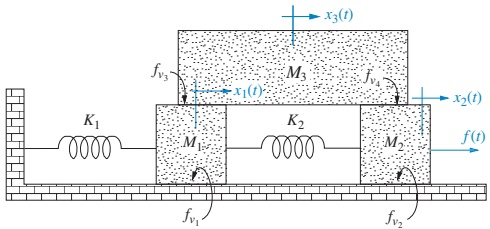
We have three masses → 3 DOF (\(x_1, x_2, x_3\)).
General patterns (mesh-style):
For \(M_1\):
\[ \big[\text{Sum of impedances connected to } x_1\big]X_{1}(s) - \big[\text{Impedances between } x_1 \text{ and } x_2\big] X_{2}(s) - \big[\text{Impedances between } x_1 \text{ and } x_3\big] X_{3}(s) = \big[\text{Sum of applied forces at } x_1\big] \]
Similar structures hold for \(x_2\) and \(x_3\).
Example 2.18: Final Equations
Using impedances (Table 2.4) and the pattern, we get:
For \(M_1\):
\[ [M_{1}s^{2} + (f_{v_{1}}+f_{v_{3}})s + (K_{1}+K_{2})]X_{1}(s) - K_{2}X_{2}(s) - f_{v_{3}}s X_{3}(s) = 0 \]
For \(M_2\):
\[ -K_{2}X_{1}(s) + [M_{2}s^{2} + (f_{v_{2}}+f_{v_{4}})s + K_{2}]X_{2}(s) - f_{v_{4}}sX_{3}(s) = F(s) \]
For \(M_3\):
\[ -f_{v_{3}}s X_{1}(s) - f_{v_{4}}s X_{2}(s) + [M_{3}s^{2}+(f_{v_{3}}+f_{v_{4}})s]X_{3}(s) = 0 \]
These are the equations of motion; we can solve for any \(X_i(s)\) or transfer function we need.
Skill Assessment: Translational Practice (2.8)
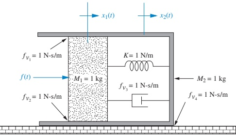
Given system in Figure 2.21:
Task: Find \(G(s) = \dfrac{X_2(s)}{F(s)}\).
Answer provided:
\[ G(s) = \frac{3s + 1}{s(s^3 + 7s^2 + 5s + 1)} \]
Tip
Try to:
- Identify DOF and define \(x_1(t)\), \(x_2(t)\), etc.
- Write equations by inspection using mechanical impedances.
- Solve the system to confirm the given \(G(s)\).
Complete solution is available on the book’s website.
Transition to Rotational Systems
We now move from translational to rotational systems.
The procedure is identical, except:
- Force \(f\) → Torque \(T\)
- Displacement \(x\) → Angular displacement \(\theta\)
- Velocity \(v\) → Angular velocity \(\omega\)
- Mass \(M\) → Moment of inertia \(J\)
Mechanical elements:
- Rotational spring (twist)
- Rotational damper (torsional friction)
- Inertia
Note
Everything we did for \(x(t)\) and \(f(t)\) now repeats for \(\theta(t)\) and \(T(t)\).
Rotational Elements & Equations (Time Domain)
Table 2.5: Rotational analogs
| Component | Torque–angular velocity | Torque–angular displacement |
|---|---|---|
| Spring | \(T(t) = K\displaystyle\int_{0}^{t}\omega(\tau)d\tau\) | \(T(t) = K\theta(t)\) |
| Viscous damper | \(T(t) = D\omega(t)\) | \(T(t) = D\dfrac{d\theta(t)}{dt}\) |
| Inertia | \(T(t) = J\dfrac{d\omega(t)}{dt}\) | \(T(t) = J\dfrac{d^{2}\theta(t)}{dt^{2}}\) |
Units:
- \(T(t)\) – N·m
- \(\theta(t)\) – rad
- \(\omega(t)\) – rad/s
- \(K\) – N·m/rad
- \(D\) – N·m·s/rad
- \(J\) – kg·m²
Rotational impedance:
\[ Z_M(s) = \frac{T(s)}{\theta(s)} = \begin{cases} K & \text{(spring)} \\ Ds & \text{(damper)} \\ Js^2 & \text{(inertia)} \end{cases} \]
Rotational Example 2.19: Physical Setup
Problem:
Find \(G(s) = \dfrac{\theta_2(s)}{T(s)}\) for the system in Figure 2.22(a).
- A shaft undergoing torsion between two inertias \(J_1\) and \(J_2\).
- A torque input \(T(t)\) applied at the left.
- Output is angular displacement \(\theta_2\) at the right.
Modeling approximations:
- Shaft torsion modeled as a lumped spring of stiffness \(K\).
- Inertia on left = \(J_1\), on right = \(J_2\).
- Damping in shaft is negligible; local inertias have viscous damping \(D_1\), \(D_2\).
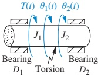
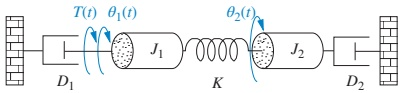
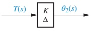
Example 2.19: Free-Body Diagrams by Superposition
We again use superposition:
For \(J_1\):
- Rotate \(J_1\) with \(J_2\) fixed → torques due to \(J_1\)’s own motion (inertia, damping, spring twist).
- Rotate \(J_2\) with \(J_1\) fixed → torques on \(J_1\) due to \(J_2\)’s motion (spring twist).
- Add them → total torques on \(J_1\).
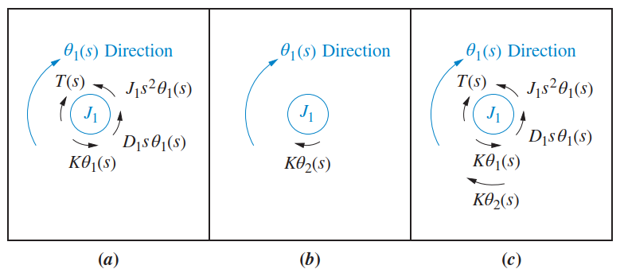
Similarly for \(J_2\), using Figure 2.24.
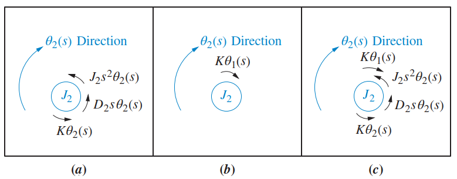
Example 2.19: Equations of Motion (Laplace)
From the FBDs:
\[ (J_{1}s^{2}+D_{1}s+K)\theta_{1}(s)-K\theta_{2}(s)=T(s) \]
\[ -K\theta_{1}(s)+(J_{2}s^{2}+D_{2}s+K)\theta_{2}(s)=0 \]
Again, matrix form:
\[ \begin{bmatrix} J_{1}s^{2}+D_{1}s+K & -K\\ -K & J_{2}s^{2}+D_{2}s+K \end{bmatrix} \begin{bmatrix} \theta_1(s) \\ \theta_2(s) \end{bmatrix} = \begin{bmatrix} T(s) \\ 0 \end{bmatrix} \]
Solve for \(\theta_2(s)/T(s)\):
\[ \frac{\theta_{2}(s)}{T(s)}=\frac{K}{\Delta} \]
with
\[ \Delta=\left|\begin{array}{cc} J_{1}s^{2}+D_{1}s+K & -K\\ -K & J_{2}s^{2}+D_{2}s+K \end{array}\right| \]
Example 2.19: MATLAB Support (TryIt 2.9)
In MATLAB with Symbolic Math Toolbox, the matrix equation can be solved symbolically:
This yields an expression matching
\[ \theta_2(s) = \frac{K}{\Delta} T(s) \]
Example 2.20: 3‑DOF Rotational — Equations by Inspection
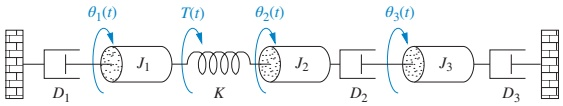
Angles: \(\theta_1, \theta_2, \theta_3\) → 3 DOF.
The generic pattern (mesh-style):
For \(\theta_1\):
- Sum of impedances connected to \(\theta_1\) times \(\theta_1(s)\)
- Minus each impedance between \(\theta_1\) and other DOF times the corresponding angle = Sum of applied torques at \(\theta_1\)
Same idea for \(\theta_2\) and \(\theta_3\).
Example 2.20: Final Equations
Applying the pattern:
\[ \begin{aligned} (J_{1}s^{2}+D_{1}s+K)\theta_{1}(s) &- K\theta_{2}(s) &- 0\theta_{3}(s) &= T(s) \\ -K\theta_{1}(s) &+ (J_{2}s^{2}+D_{2}s+K)\theta_{2}(s) &- D_{2}s\theta_{3}(s) &= 0\\ -0\theta_{1}(s) &- D_{2}s\theta_{2}(s) &+ (J_{3}s^{2}+D_{3}s+D_{2}s)\theta_{3}(s) &= 0 \end{aligned} \]
Again, we have a 3×3 linear system in \(\theta_1(s)\), \(\theta_2(s)\), \(\theta_3(s)\).
Note
These equations are ready to be solved for transfer functions like \(\theta_3(s)/T(s)\) or \(\theta_2(s)/T(s)\) using matrix methods.
Skill Assessment: Rotational Practice (2.9)
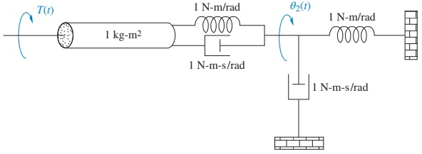
Problem: For the system in Figure 2.26, find:
\[ G(s) = \frac{\theta_2(s)}{T(s)} \]
Answer:
\[ G(s) = \frac{1}{2s^{2} + s + 1} \]
Tip
Check yourself:
- Identify DOF and define \(\theta_1\), \(\theta_2\).
- Write FBDs or use impedance inspection.
- Derive equations of motion in Laplace domain.
- Solve for \(\theta_2(s)/T(s)\) and compare with the given answer.
Real-World ECE Applications
Where do these models show up?
- DC motor position control:
- Motor rotor → inertia \(J\)
- Load gear/shaft → spring \(K\) (torsional flexibility) + damping \(D\)
- Servo systems (antenna pointing, camera gimbals):
- Rotational shafts with compliance and damping.
- Hard disk drives / tape drives:
- Rotational platters and head actuators.
- Robotics joints:
- Link flexibilities modeled with springs/dampers; joint inertia modeled as \(J\).
In each case, the controller design relies on an accurate transfer function.

Summary / Key Points
Translational elements:
- Spring: \(f(t)=Kx(t)\), \(Z_M=K\)
- Damper: \(f(t)=f_v \dfrac{dx}{dt}\), \(Z_M=f_v s\)
- Mass: \(f(t)=M \dfrac{d^{2}x}{dt^{2}}\), \(Z_M=Ms^2\)
Rotational elements:
- Spring: \(T(t)=K\theta(t)\), \(Z_M=K\)
- Damper: \(T(t)=D \dfrac{d\theta}{dt}\), \(Z_M=Ds\)
- Inertia: \(T(t)=J \dfrac{d^{2}\theta}{dt^{2}}\), \(Z_M=Js^2\)
Mechanical impedance \(Z_M(s)=\dfrac{F(s)}{X(s)}\) or \(\dfrac{T(s)}{\theta(s)}\) allows circuit-like analysis.
Degrees of freedom (DOF) = number of independent motions = number of equations of motion.
Equations of motion for multi-DOF systems resemble mesh equations:
- Diagonal: sum of impedances connected to a DOF.
- Off-diagonal: negative of impedances between DOFs.
Transfer functions are obtained by solving the Laplace-domain linear system for output over input.
Formula Summary (Cheat Sheet)
Translational:
- Spring: \[ f(t)=Kx(t), \quad F(s)=KX(s), \quad Z_M = K \]
- Damper: \[ f(t)=f_{v}\frac{dx}{dt}, \quad F(s)=f_{v}sX(s), \quad Z_M = f_v s \]
- Mass: \[ f(t)=M\frac{d^{2}x}{dt^{2}}, \quad F(s)=Ms^{2}X(s), \quad Z_M = Ms^2 \]
Rotational:
- Spring: \[ T(t)=K\theta(t), \quad T(s)=K\theta(s), \quad Z_M = K \]
- Damper: \[ T(t)=D\frac{d\theta}{dt}, \quad T(s)=Ds\theta(s), \quad Z_M = Ds \]
- Inertia: \[ T(t)=J\frac{d^{2}\theta}{dt^{2}}, \quad T(s)=Js^{2}\theta(s), \quad Z_M = Js^2 \]
General transfer function pattern (1‑DOF):
- Translational: \(G(s)=\dfrac{X(s)}{F(s)} = \dfrac{1}{Ms^{2}+f_v s + K}\)
- Rotational: \(G(s)=\dfrac{\theta(s)}{T(s)} = \dfrac{1}{Js^{2}+Ds + K}\)
Next Steps
For practice before the next class:
- Re-derive the answers for Skill-Assessment Exercises 2.8 and 2.9.
- Try creating your own 2‑DOF mechanical system (translational or rotational), draw it, and write its equations of motion by inspection.
- In the next lecture, we will extend these ideas to systems with electrical and mechanical parts together (mechatronic systems) and discuss how to cascade their transfer functions.
Translational & Rotational Mechanical Systems – Interactive Addendum
Addendum Interactive Deck
How This Interactive Deck Works
This addendum lets you experiment with the ideas from Sections 2.5–2.6 directly in the browser.
You will:
- Tweak mass–spring–damper and rotational parameters and see how transfer functions and responses change.
- Use Pyodide (Python in WebAssembly) for live code execution.
- Use Observable JS (OJS) sliders + Pyodide + Plotly for reactive plots.
Tips:
- Change parameters and re‑run code blocks to see immediate effects.
- Focus on the connection between physical parameters (\(M, f_v, K, J, D\)) and the resulting transfer function / response.
1. Translational Mass–Spring–Damper: Build the Transfer Function
Use this interactive Python cell to compute the transfer function
\[ G(s) = \frac{X(s)}{F(s)} = \frac{1}{Ms^2 + f_v s + K} \]
for user‑chosen parameters.
Try:
- Set
fv_val = 0.0to see the undamped transfer function. - Increase
fv_valand observe how the denominator changes.
2. Translational System: Explore Pole Locations
The poles of \(G(s)\) are the roots of \(Ms^2 + f_v s + K = 0\).
Use this block to compute the poles for your chosen parameters.
Questions to think about:
- When are the poles real vs. complex?
- How does increasing damping \(f_v\) move the poles?
3. Reactive Plot: Translational Step Response vs. Parameters
Use the sliders to adjust \(M\), \(f_v\), and \(K\). A step response of the mass–spring–damper system will update automatically.
Try:
- Set
fv_tr = 0and see the oscillatory behavior. - Increase
fv_trand observe the motion become more damped. - Change
K_trto see how the stiffness changes the oscillation frequency.
4. Visualizing Mechanical Impedance Magnitudes
Mechanical impedances in the \(s=j\omega\) domain:
- Mass: \(Z_M(j\omega) = M (j\omega)^2 = -M\omega^2\)
- Damper: \(Z_M(j\omega) = f_v (j\omega)\)
- Spring: \(Z_M(j\omega) = K\)
Use sliders to vary \(M\), \(f_v\), and \(K\), and see how the magnitude of each changes over frequency.
Observe:
- At low frequency, which element dominates?
- At high frequency, which element dominates?
- How does increasing each parameter shift the curves?
5. 2‑DOF Translational System: Interactive Coefficients
Consider the 2‑DOF system from Example 2.17. We focus on the diagonal terms of the impedance matrix:
- \(Z_{11} = M_1 s^2 + (f_{v1}+f_{v3})s + (K_1 + K_2)\)
- \(Z_{22} = M_2 s^2 + (f_{v2}+f_{v3})s + (K_2 + K_3)\)
Use sliders to choose parameters and see how the coefficients of \(s^2\), \(s\), and constant terms change.
viewof M1_2dof = Inputs.range([0.5, 5], {step: 0.5, label: "M1 (kg)", value: 1})
viewof M2_2dof = Inputs.range([0.5, 5], {step: 0.5, label: "M2 (kg)", value: 2})
viewof fv1_2dof = Inputs.range([0, 10], {step: 0.5, label: "f_v1 (N·s/m)", value: 1})
viewof fv2_2dof = Inputs.range([0, 10], {step: 0.5, label: "f_v2 (N·s/m)", value: 1})
viewof fv3_2dof = Inputs.range([0, 10], {step: 0.5, label: "f_v3 (N·s/m)", value: 2})
viewof K1_2dof = Inputs.range([0, 20], {step: 1, label: "K1 (N/m)", value: 2})
viewof K2_2dof = Inputs.range([0, 20], {step: 1, label: "K2 (N/m)", value: 5})
viewof K3_2dof = Inputs.range([0, 20], {step: 1, label: "K3 (N/m)", value: 3})Use this to see the mesh-like pattern:
- Diagonal terms: “self” impedances.
- Off-diagonal: negative of “between” impedances.
6. Rotational System: Build the Transfer Function
Now switch to rotational systems. For a 1‑DOF rotational system (spring–damper–inertia):
\[ G(s) = \frac{\theta(s)}{T(s)} = \frac{1}{Js^2 + D s + K} \]
Experiment with this interactive block.
Compare this form with the translational case. They are structurally identical, just with different physical units.
7. Rotational 2‑DOF (Example 2.19): Impedance Matrix Exploration
For Example 2.19, the equations are:
\[ (J_{1}s^{2}+D_{1}s+K)\theta_{1}(s)-K\theta_{2}(s)=T(s) \]
\[ -K\theta_{1}(s)+(J_{2}s^{2}+D_{2}s+K)\theta_{2}(s)=0 \]
Use sliders to explore the impedance matrix and its determinant \(\Delta\).
viewof J1_rot = Inputs.range([0.1, 5], {step: 0.1, label: "J1 (kg·m²)", value: 0.5})
viewof J2_rot = Inputs.range([0.1, 5], {step: 0.1, label: "J2 (kg·m²)", value: 1.0})
viewof D1_rot = Inputs.range([0, 5], {step: 0.2, label: "D1 (N·m·s/rad)", value: 0.5})
viewof D2_rot = Inputs.range([0, 5], {step: 0.2, label: "D2 (N·m·s/rad)", value: 0.5})
viewof K_rot = Inputs.range([0.5, 20], {step: 0.5, label: "K (N·m/rad)", value: 5})Reflect:
- How does increasing \(K\) affect \(\Delta\) and \(G(s)\)?
- What happens if you increase \(D_1\) or \(D_2\)?
8. Rotational 1‑DOF: Reactive Step Response
Use sliders to adjust \(J\), \(D\), and \(K\) and see the step response in angle \(\theta(t)\).
Explore:
- \(D = 0\) → purely oscillatory response.
- Larger \(D\) → more damping.
- Larger \(K\) → higher natural frequency.
9. Compare Translational vs Rotational Models Side-by-Side
Use this cell to print both transfer functions side-by-side for your chosen parameters.
Notice the pattern:
- Same mathematical structure, different physical meanings.
- This is why mechanical systems can be treated like RLC networks once we define appropriate analogies and impedances.
10. Your Turn: Design a Simple 2‑DOF System
Use this empty template to quickly prototype your own 2‑DOF translational system equations in Python.
Next challenge (outside this block):
- Assume input force \(F(s)\) acts at \(x_1\), write the right‑hand side vector, and solve for \(X_2(s)/F(s)\).
Wrap-Up: What You Should Take Away
Using these interactive blocks, you have:
- Manipulated mass–spring–damper and rotational system parameters and seen their impact on transfer functions and time responses.
- Observed how mechanical impedance shapes frequency response.
- Seen how multi‑DOF systems lead to mesh-like impedance matrices, just like in circuits.
- Practiced using symbolic and numerical tools (via Pyodide) to reinforce the theory from Sections 2.5–2.6.
Use this deck as a sandbox: modify code, change parameters, and relate every change you see back to the underlying physics + Laplace-domain algebra.